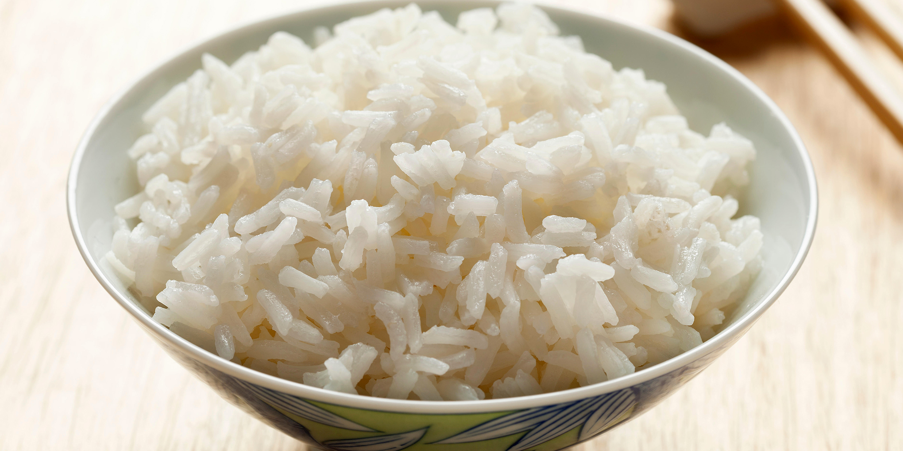
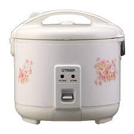

Rice

Rice is commonly eaten throughout the world as a sidedish or can be used in a main dish.
This type of rice shown above is called Jasmine rice.
Ingredients:
Only ingredient needed is rice and a rice cooker
Rice
Steps:
- Grab as much rice as needed
- Wash rice in a clean bowl with cold water and then drain 2-3 times
- put washed rice into rice cooker and fill with 2 parts water to the amount of rice put in
- start rice cooker 
Once rice is finished cooking, stir it up a bit with a spoon or laddle.
Serve accordingly
Return to index